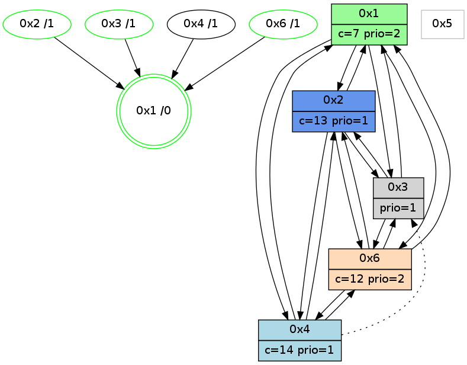

>> << IDX [start] -100 -25 -5 +0 +5 +25 +100 [1020.28990912]
 Previous packets
----------------------------------------------------------------------
1015.368826 beacon01(adaf) #0 coord=01,02,05,03,04,06 cycle=432.0ms assoc
-- color-indic=1 64 a8 27
1015.378787 beacon02(adaf) #0 coord=01,02,05,03,04,06 cycle=432.0ms assoc 64 f9 d8
1015.388788 beacon05(adaf) #0 coord=01,02,05,03,04,06 cycle=432.0ms assoc 64 5f f2
1015.398788 beacon03(adaf) #0 coord=01,02,05,03,04,06 cycle=432.0ms assoc 64 c3 d6
1015.408788 beacon04(adaf) #0 coord=01,02,05,03,04,06 cycle=432.0ms assoc 64 65 fc
1015.418790 beacon06(adaf) #0 coord=01,02,05,03,04,06 cycle=432.0ms assoc 64 11 e0
1015.430518 [Hello(4): seq=822 sym=1,6 asym=2,3 sysInfo=hasWarning stat=1:7,5,1,0/6:15,7,11,4/2:9,7,0,0/3:0,1,1,1]
1015.432615 [STC(1) #0.153 new-neigh,tree-change,inconsistent-stability,stable,to-color d=0]
1015.434733 [Color(3) seq=150 @0:0 prio=1 c=7,c,d;1,4,6,8,9,b,e]
1015.436911 [Color(2) seq=208 @0:0 color=13 prio=1 c=7,c,e;1,4,6,8,9,b]
1015.443488 [Color(1) seq=248 @0:0 color=7 prio=2 c=1,4,6,8,9,b,c,d;0,2,3,5,a,e]
----------------------------------------------------------------------
1015.860934 beacon01(adaf) #0 coord=01,02,05,03,04,06 cycle=432.0ms assoc
-- color-indic=1 64 e5 20
1015.870894 beacon02(adaf) #0 coord=01,02,05,03,04,06 cycle=432.0ms assoc 64 b4 df
1015.880894 beacon05(adaf) #0 coord=01,02,05,03,04,06 cycle=432.0ms assoc 64 12 f5
1015.890896 beacon03(adaf) #0 coord=01,02,05,03,04,06 cycle=432.0ms assoc 64 8e d1
1015.900895 beacon04(adaf) #0 coord=01,02,05,03,04,06 cycle=432.0ms assoc 64 28 fb
1015.910896 beacon06(adaf) #0 coord=01,02,05,03,04,06 cycle=432.0ms assoc 64 5c e7
1015.922452 [STC(4)->1 #0.153 new-neigh,tree-change,inconsistent-stability,to-color d=1]
1015.924537 [Hello(6): seq=735 sym=4,2,1,3 sysInfo=hasWarning stat=4:1,0,1,0/2:6,12,5,2/1:2,2,12,1/3:13,8,2,7]
1015.926387 [Color(5) seq=155 @0:0 color=11/12 prio=1 c=8,d;4,7,9,c,e]
1015.927678 [STC(6)->1 #0.153 new-neigh,tree-change,inconsistent-stability,stable,to-color d=1]
1015.930928 [Color(6) seq=207 @0:0 color=12 prio=2 c=7,d,e;1,4,6,8,9,b]
1015.932723 [Hello(1): seq=722 sym=2,4,6,3 sysInfo=hasWarning,coloring-mode-on,ColoringModeRequestCalled stat=2:15,0,9,3/4:7,0,6,0/6:15,13,0,3/3:1,1,1,1]
----------------------------------------------------------------------
1016.353042 beacon01(adaf) #0 coord=01,02,05,03,04,06 cycle=432.0ms assoc
-- color-indic=1 64 21 4f
1016.363003 beacon02(adaf) #0 coord=01,02,05,03,04,06 cycle=432.0ms assoc 64 70 b0
1016.373004 beacon05(adaf) #0 coord=01,02,05,03,04,06 cycle=432.0ms assoc 64 d6 9a
1016.383004 beacon03(adaf) #0 coord=01,02,05,03,04,06 cycle=432.0ms assoc 64 4a be
1016.393004 beacon04(adaf) #0 coord=01,02,05,03,04,06 cycle=432.0ms assoc 64 ec 94
1016.403004 beacon06(adaf) #0 coord=01,02,05,03,04,06 cycle=432.0ms assoc 64 98 88
1016.414731 [Hello(4): seq=823 sym=1,6 asym=2,3 sysInfo=hasWarning stat=1:8,6,2,0/6:0,8,11,4/2:9,8,0,0/3:1,2,1,1]
1016.417469 [Color(2) seq=209 @0:0 color=13 prio=1 c=7,c,e;1,4,6,8,9,b]
1016.418958 [Color(3) seq=151 @0:0 prio=1 c=7,c,d;1,4,6,8,9,b,e]
1016.421355 [Color(1) seq=249 @0:0 color=7 prio=2 c=1,4,6,8,9,b,c,d;0,2,3,5,a,e]
----------------------------------------------------------------------
1016.845150 beacon01(adaf) #0 coord=01,02,05,03,04,06 cycle=432.0ms assoc
-- color-indic=1 64 6d ff
1016.855112 beacon02(adaf) #0 coord=01,02,05,03,04,06 cycle=432.0ms assoc 64 3c 00
1016.865112 beacon05(adaf) #0 coord=01,02,05,03,04,06 cycle=432.0ms assoc 64 9a 2a
1016.875111 beacon03(adaf) #0 coord=01,02,05,03,04,06 cycle=432.0ms assoc 64 06 0e
1016.885111 beacon04(adaf) #0 coord=01,02,05,03,04,06 cycle=432.0ms assoc 64 a0 24
1016.895111 beacon06(adaf) #0 coord=01,02,05,03,04,06 cycle=432.0ms assoc 64 d4 38
1016.906819 [Hello(3): seq=821 sym=6,2,1 sysInfo=hasWarning stat=6:1,12,7,3/2:5,7,1,0/1:14,10,11,1]
1016.909353 [Hello(6): seq=736 sym=4,2,1,3 sysInfo=hasWarning stat=4:2,0,2,0/2:6,13,5,2/1:3,3,12,1/3:14,9,2,7]
1016.912269 [Hello(2): seq=1311 sym=3,6,1,4 sysInfo=hasWarning stat=3:5,1,12,5/6:7,1,12,2/1:4,3,5,0/4:1,0,0,0]
1016.914211 [Color(6) seq=208 @0:0 color=12 prio=2 c=7,d,e;1,4,6,8,9,b]
1016.920479 [Hello(1): seq=723 sym=2,4,6,3 sysInfo=hasWarning,coloring-mode-on,ColoringModeRequestCalled stat=2:0,0,9,3/4:7,0,6,0/6:15,13,0,3/3:1,1,1,1]
----------------------------------------------------------------------
1017.337257 beacon01(adaf) #0 coord=01,02,05,03,04,06 cycle=432.0ms assoc
-- color-indic=1 64 a9 90
1017.347218 beacon02(adaf) #0 coord=01,02,05,03,04,06 cycle=432.0ms assoc 64 f8 6f
1017.357217 beacon05(adaf) #0 coord=01,02,05,03,04,06 cycle=432.0ms assoc 64 5e 45
1017.367218 beacon03(adaf) #0 coord=01,02,05,03,04,06 cycle=432.0ms assoc 64 c2 61
1017.377219 beacon04(adaf) #0 coord=01,02,05,03,04,06 cycle=432.0ms assoc 64 64 4b
1017.387220 beacon06(adaf) #0 coord=01,02,05,03,04,06 cycle=432.0ms assoc 64 10 57
1017.398950 [Hello(4): seq=824 sym=2,1,6 asym=3 sysInfo=hasWarning stat=2:10,9,0,0/1:9,7,2,0/6:1,9,11,4/3:2,3,1,1]
1017.401273 [Color(1) seq=250 @0:0 color=7 prio=2 c=1,4,6,8,9,b,c,d;0,2,3,5,a,e]
1017.403160 [Color(3) seq=152 @0:0 prio=1 c=7,c,d;1,4,6,8,9,b,e]
1017.405347 [Color(2) seq=210 @0:0 color=13 prio=1 c=7,c,e;1,4,6,8,9,b]
----------------------------------------------------------------------
1017.829367 beacon01(adaf) #0 coord=01,02,05,03,04,06 cycle=432.0ms assoc
-- color-indic=1 64 d1 3d
1017.839328 beacon02(adaf) #0 coord=01,02,05,03,04,06 cycle=432.0ms assoc 64 80 c2
1017.849328 beacon05(adaf) #0 coord=01,02,05,03,04,06 cycle=432.0ms assoc 64 26 e8
1017.859329 beacon03(adaf) #0 coord=01,02,05,03,04,06 cycle=432.0ms assoc 64 ba cc
1017.869329 beacon04(adaf) #0 coord=01,02,05,03,04,06 cycle=432.0ms assoc 64 1c e6
1017.879330 beacon06(adaf) #0 coord=01,02,05,03,04,06 cycle=432.0ms assoc 64 68 fa
1017.893594 [Hello(6): seq=737 sym=4,2,1,3 sysInfo=hasWarning stat=4:3,0,2,0/2:6,14,5,2/1:4,4,12,1/3:15,10,2,7]
1017.895371 [Hello(1): seq=724 sym=2,4,6,3 sysInfo=hasWarning,coloring-mode-on,ColoringModeRequestCalled stat=2:0,1,9,3/4:7,0,6,0/6:15,13,0,3/3:1,2,1,1]
1017.898360 [Color(6) seq=209 @0:0 color=12 prio=2 c=7,d,e;1,4,6,8,9,b]
1017.902462 [STC(1) #0.154 new-neigh,tree-change,inconsistent-stability,stable,to-color d=0]
----------------------------------------------------------------------
1018.321475 beacon01(adaf) #0 coord=01,02,05,03,04,06 cycle=432.0ms assoc
-- color-indic=1 64 15 52
1018.331435 beacon02(adaf) #0 coord=01,02,05,03,04,06 cycle=432.0ms assoc 64 44 ad
1018.341436 beacon05(adaf) #0 coord=01,02,05,03,04,06 cycle=432.0ms assoc 64 e2 87
1018.351436 beacon03(adaf) #0 coord=01,02,05,03,04,06 cycle=432.0ms assoc 64 7e a3
1018.361437 beacon04(adaf) #0 coord=01,02,05,03,04,06 cycle=432.0ms assoc 64 d8 89
1018.371437 beacon06(adaf) #0 coord=01,02,05,03,04,06 cycle=432.0ms assoc 64 ac 95
1018.383050 [STC(6)->1 #0.154 new-neigh,tree-change,inconsistent-stability,stable,to-color d=1]
1018.385140 [STC(2)->1 #0.154 new-neigh,tree-change,inconsistent-stability,stable,to-color d=1]
1018.386423 [Color(1) seq=251 @0:0 color=7 prio=2 c=1,4,6,8,9,b,c,d;0,2,3,5,a,e]
1018.388790 [Hello(4): seq=825 sym=2,1,6 asym=3 sysInfo=hasWarning stat=2:10,10,0,0/1:10,8,3,0/6:2,10,11,4/3:3,4,1,1]
1018.390703 [Color(2) seq=211 @0:0 color=13 prio=1 c=7,c,e;1,4,6,8,9,b]
1018.393022 [STC(3)->1 #0.154 new-neigh,tree-change,inconsistent-stability,stable,to-color d=1]
1018.395319 [Color(3) seq=153 @0:0 prio=1 c=7,c,d;1,4,6,8,9,b,e]
1018.402486 [STC(4)->1 #0.154 new-neigh,tree-change,inconsistent-stability,to-color d=1]
----------------------------------------------------------------------
1018.813584 beacon01(adaf) #0 coord=01,02,05,03,04,06 cycle=432.0ms assoc
-- color-indic=1 64 59 e2
1018.823546 beacon02(adaf) #0 coord=01,02,05,03,04,06 cycle=432.0ms assoc 64 08 1d
1018.833544 beacon05(adaf) #0 coord=01,02,05,03,04,06 cycle=432.0ms assoc 64 ae 37
1018.843545 beacon03(adaf) #0 coord=01,02,05,03,04,06 cycle=432.0ms assoc 64 32 13
1018.853545 beacon04(adaf) #0 coord=01,02,05,03,04,06 cycle=432.0ms assoc 64 94 39
1018.863545 beacon06(adaf) #0 coord=01,02,05,03,04,06 cycle=432.0ms assoc 64 e0 25
1018.877824 [Hello(6): seq=738 sym=4,2,1,3 sysInfo=hasWarning stat=4:4,0,3,0/2:6,15,6,2/1:5,5,13,1/3:0,11,3,7]
1018.880948 [Color(6) seq=210 @0:0 color=12 prio=2 c=7,d,e;1,4,6,8,9,b]
1018.886538 [Hello(1): seq=725 sym=2,4,6,3 sysInfo=hasWarning,coloring-mode-on,ColoringModeRequestCalled stat=2:0,2,9,3/4:8,0,7,0/6:15,13,1,3/3:1,3,2,1]
----------------------------------------------------------------------
1019.305691 beacon01(adaf) #0 coord=01,02,05,03,04,06 cycle=432.0ms assoc
-- color-indic=1 64 9d 8d
1019.315652 beacon02(adaf) #0 coord=01,02,05,03,04,06 cycle=432.0ms assoc 64 cc 72
1019.325652 beacon05(adaf) #0 coord=01,02,05,03,04,06 cycle=432.0ms assoc 64 6a 58
1019.335651 beacon03(adaf) #0 coord=01,02,05,03,04,06 cycle=432.0ms assoc 64 f6 7c
1019.345653 beacon04(adaf) #0 coord=01,02,05,03,04,06 cycle=432.0ms assoc 64 50 56
1019.355653 beacon06(adaf) #0 coord=01,02,05,03,04,06 cycle=432.0ms assoc 64 24 4a
1019.367350 [Hello(4): seq=826 sym=2,1,6 asym=3 sysInfo=hasWarning stat=2:10,11,0,0/1:11,8,3,0/6:3,11,11,4/3:4,4,1,1]
1019.370088 [Color(2) seq=212 @0:0 color=13 prio=1 c=7,c,e;1,4,6,8,9,b]
1019.371603 [Color(3) seq=154 @0:0 prio=1 c=7,c,d;1,4,6,8,9,b,e]
1019.376258 [Color(1) seq=252 @0:0 color=7 prio=2 c=1,4,6,8,9,b,c,d;0,2,3,5,a,e]
----------------------------------------------------------------------
1019.797802 beacon01(adaf) #0 coord=01,02,05,03,04,06 cycle=432.0ms assoc
-- color-indic=1 64 d0 8a
1019.807764 beacon02(adaf) #0 coord=01,02,05,03,04,06 cycle=432.0ms assoc 64 81 75
1019.817763 beacon05(adaf) #0 coord=01,02,05,03,04,06 cycle=432.0ms assoc 64 27 5f
1019.827763 beacon03(adaf) #0 coord=01,02,05,03,04,06 cycle=432.0ms assoc 64 bb 7b
1019.837764 beacon04(adaf) #0 coord=01,02,05,03,04,06 cycle=432.0ms assoc 64 1d 51
1019.847764 beacon06(adaf) #0 coord=01,02,05,03,04,06 cycle=432.0ms assoc 64 69 4d
1019.858968 [Hello(1): seq=726 sym=2,4,6,3 sysInfo=hasWarning,coloring-mode-on,ColoringModeRequestCalled stat=2:0,2,9,3/4:8,0,7,0/6:15,13,1,3/3:1,3,2,1]
1019.861644 [Hello(6): seq=739 sym=4,2,1,3 sysInfo=hasWarning stat=4:5,0,3,0/2:6,0,6,2/1:6,6,13,1/3:1,12,3,7]
1019.864766 [Color(6) seq=211 @0:0 color=12 prio=2 c=7,d,e;1,4,6,8,9,b]